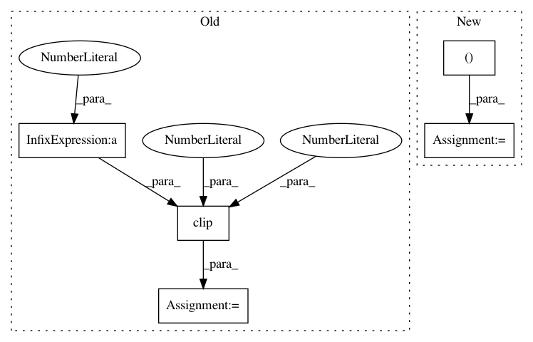

ff94e24d202ba1e5861caddc915df0c43f23b766,examples/application_object_detection.py,,main,#,62
Before Change
gradients = frcnn.loss_gradient(x=image, y=None)
// Create adversarial image
image_adv = image + np.sign(gradients) * 8 * 1
image_adv = np.clip(image_adv, a_min=0, a_max=255).astype(np.uint8)
for i in range(image_adv.shape[0]):
plt.axis("off")
plt.title("image_adv {}".format(i))
After Change
def main():
// Create object detector
frcnn = PyTorchFasterRCNN(clip_values=(0, 255))
// Load image 1
image_1 = cv2.imread("./10best-cars-group-cropped-1542126037.jpg")
image_1 = cv2.cvtColor(image_1, cv2.COLOR_BGR2RGB) // Convert to RGB
print("image_1.shape:", image_1.shape)
// Load image 2
// image_2 = cv2.imread("./banner-diverse-group-of-people-2.jpg")
// image_2 = cv2.cvtColor(image_2, cv2.COLOR_BGR2RGB) // Convert to RGB
// print("image_2.shape:", image_2.shape)
// Stack images
image = np.stack([image_1], axis=0)
print("image.shape:", image.shape)
for i in range(image.shape[0]):
plt.axis("off")
plt.title("image {}".format(i))
plt.imshow(image[i], interpolation="nearest")
plt.show()
// Make prediction on benign samples
predictions = frcnn.predict(x=image)
// Process predictions
predictions_class, predictions_boxes, predictions_class = extract_predictions(predictions[0])
// Plot predictions
plot_image_with_boxes(img=image[0].copy(), boxes=predictions_boxes, pred_cls=predictions_class)
// // Calculate loss gradients
// gradients = frcnn.loss_gradient(x=image, y=None)
//
// // Create adversarial image
// image_adv = image + np.sign(gradients) * 8 * 1
// image_adv = np.clip(image_adv, a_min=0, a_max=255).astype(np.uint8)
attack = FastGradientMethod(classifier=frcnn, eps=8)
image_adv = attack.generate(x=image, y=None)
print("np.amax(np.abs(image - image_adv))")
print(np.amax(np.abs(image - image_adv)))
In pattern: SUPERPATTERN
Frequency: 3
Non-data size: 5
Instances
Project Name: IBM/adversarial-robustness-toolbox
Commit Name: ff94e24d202ba1e5861caddc915df0c43f23b766
Time: 2020-03-18
Author: beat.buesser@ie.ibm.com
File Name: examples/application_object_detection.py
Class Name:
Method Name: main
Project Name: MIC-DKFZ/trixi
Commit Name: 0d39c9dc19388c18362897c83cebbe12a063a752
Time: 2019-06-14
Author: jens.petersen@dkfz.de
File Name: trixi/logger/file/pytorchplotfilelogger.py
Class Name: PytorchPlotFileLogger
Method Name: show_image_grid_heatmap
Project Name: MIC-DKFZ/trixi
Commit Name: 0d39c9dc19388c18362897c83cebbe12a063a752
Time: 2019-06-14
Author: jens.petersen@dkfz.de
File Name: trixi/logger/visdom/pytorchvisdomlogger.py
Class Name: PytorchVisdomLogger
Method Name: show_image_grid_heatmap